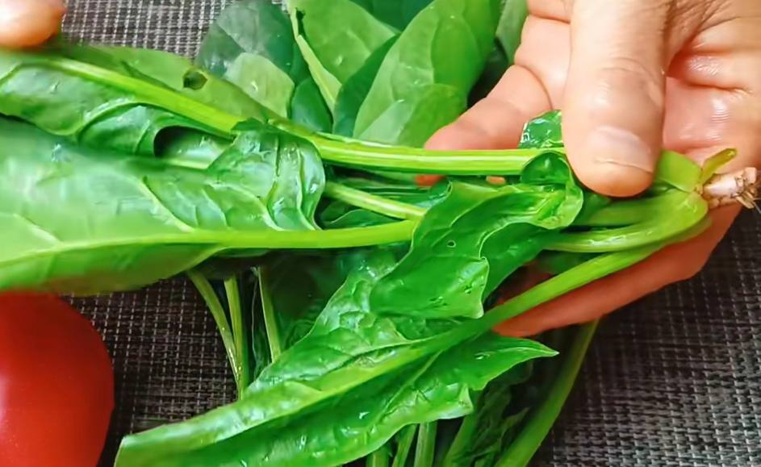
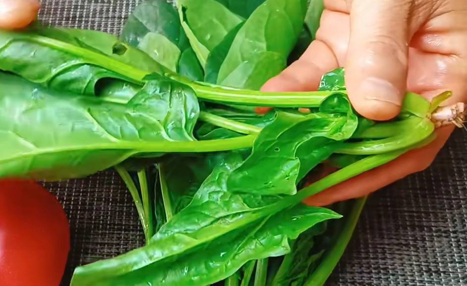

菠菜
我們提供新鮮、美味的菠菜，適合用於各種烹飪方式。
如何使用菠菜
菠菜可以在各種烹飪方式中使用，例如沙拉、炒菜和湯。以下是一些菠菜食譜：
- 菠菜沙拉：將新鮮的菠菜、西紅柿和蘑菇混合在一起，加上自製沙拉醬。
- 菠菜炒蛋：在平底鍋中熱油，加入蛋液和菠菜，炒至蛋熟透。
- 菠菜湯：將菠菜、馬鈴薯和洋蔥煮在一起，加上鹽和胡椒調味。
購買菠菜
如果您想購買我們的菠菜，請聯繫我們，我們將會為您提供最新的產品和價格信息。
我們提供新鮮、美味的菠菜，適合用於各種烹飪方式。
菠菜可以在各種烹飪方式中使用，例如沙拉、炒菜和湯。以下是一些菠菜食譜：
如果您想購買我們的菠菜，請聯繫我們，我們將會為您提供最新的產品和價格信息。